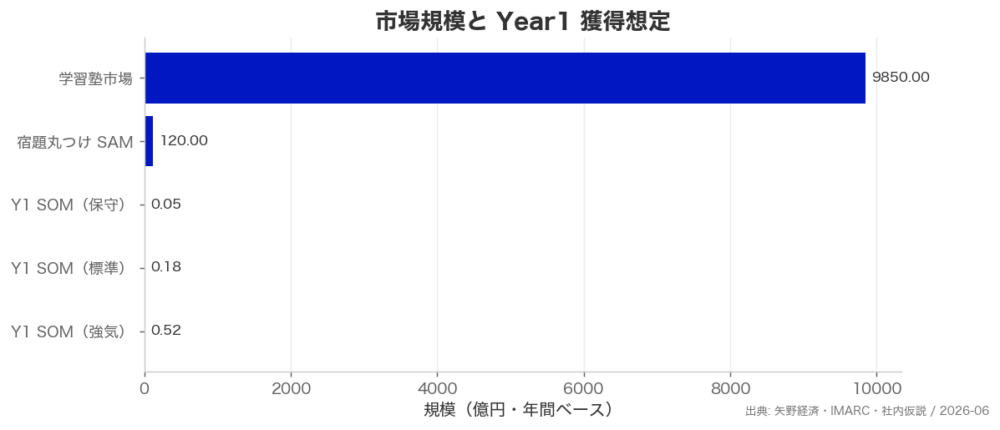
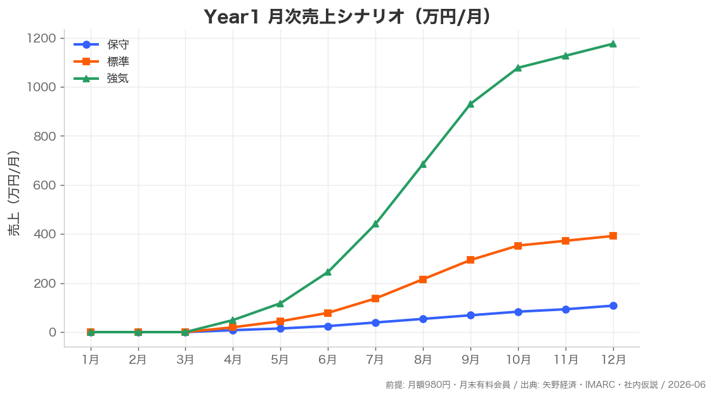
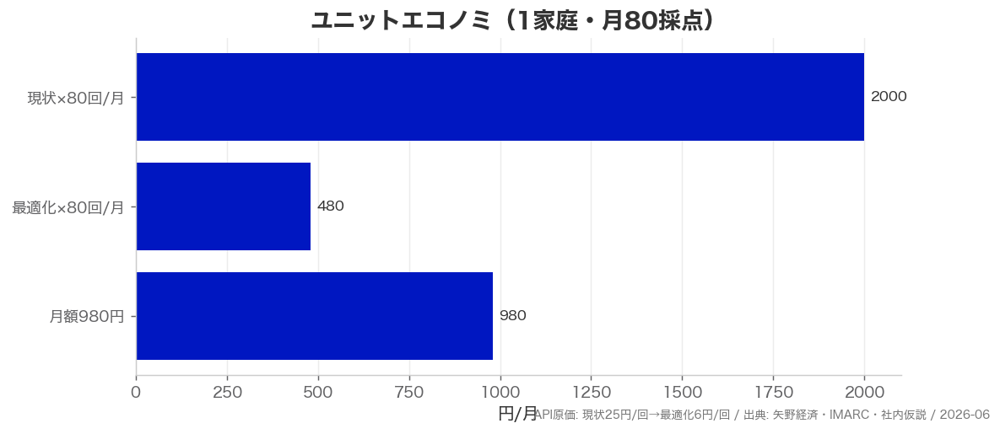

まるつけ — 事業概要（公庫面談用）
2026-06-25｜報酬35万固定・自宅オフィス｜借入希望 1,200万（自己400万）
一言
中学受験家庭の「毎晩2〜3時間の丸つけ」を、写真1枚で5分に。月980円で塾年200万のうち「親の採点・弱点見える化」を代替。
1. 課題と解決
| 課題 | 共働き受験家庭の夕方ボトルネック。塾代年200〜300万でも丸つけは親の無償労働 |
|---|
| 解決 | 答案を撮影 → AIが⭕️❌🟡採点。未記入は解答例。将来は弱点→週次コーチ |
|---|
| ミッション | 全ての子供に学習機会を — 高い塾に頼らず家庭学習の質を上げる |
|---|
2. プロダクト状況（2026-06時点）
- FastAPI + OpenAI Vision + PWA（iPhone ホーム画面追加可）
- 小1〜6・4教科・複数枚答案・解答ページ添付対応
- 🟡要確認設計（誤採点回避）、未記入→解答例
- 合成3ケース自動テスト合格（4〜6秒/枚）
- Fly.io ベータ公開手順整備済
3. 競合との差別化
| 採点くん | 汎用小中・月600円。国語精度に不満の口コミ。受験特化なし |
|---|
| まるつけ | 中学受験特化・🟡信頼・未記入→解答例・弱点コーチング出口 |
|---|
4. 市場・売上計画

市場規模と Year1 獲得想定（億円）

Year1 月次売上（万円/月）— 標準シナリオ採用
| Year1 | 売上1,303万・有料4,067人（12月）・営業CF ▲472万 |
|---|
| Year2 | 売上5,880万・営業利益680万 |
|---|
| Year3 | 売上10,584万・営業利益2,400万 |
|---|
5. ユニットエコノミ

1家庭・月80採点: API原価480円 vs 月額980円 → 粗利約51%
6. 資金計画（1,600万円）
| 設備 46万 | 開発PC・クラウド・App Store |
|---|
| 運転 1,554万 | API919万 / 人件483万 / 事務所18万 / マーケ130万 / 外注128万 / 他 |
|---|
| 自己資金 | 400万 |
|---|
| 公庫借入 | 1,200万 |
|---|
| Y1末残 | 1,012万（最低771万・M9） |
|---|
7. 返済計画
- 借入1,200万・10年・元金据置6ヶ月
- M10以降月次営業CFプラス
- Year2営業黒字680万 → 返済原資: サブスク売上
8. 創業者
| 経歴 | SAP Japan 営業Mgr → CADDi ENT Sales 副部長（2026/7退職予定） |
|---|
| 強み | AI SaaS GTM・OpenAI実務・受験家庭の当事者性 |
|---|
| 報酬 | 代表35万/月固定 |
|---|
| 事務所 | 自宅兼事務所（按分1.5万/月） |
|---|
| 開業 | 2026年8月（まるつけ株式会社） |
|---|
9. リスクと対策
| 精度失望 | 🟡要確認・片ページ推奨・段階的教科拡大 |
|---|
| APIコスト | モデル最適化（25円→6円/回） |
|---|
| 競合先行 | 受験特化・ミッション・コーチング出口で棲み分け |
|---|
詳細: company/projects/maruke-app/jfc-application-index.md